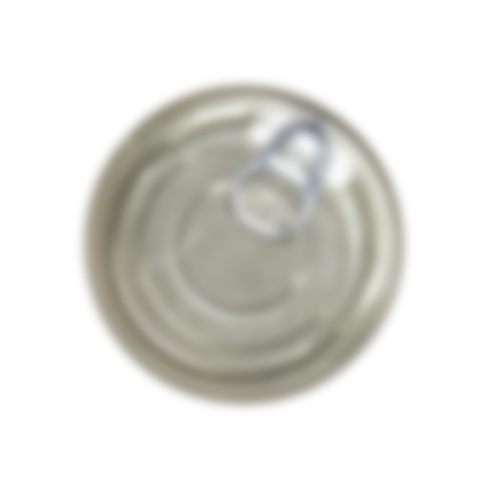
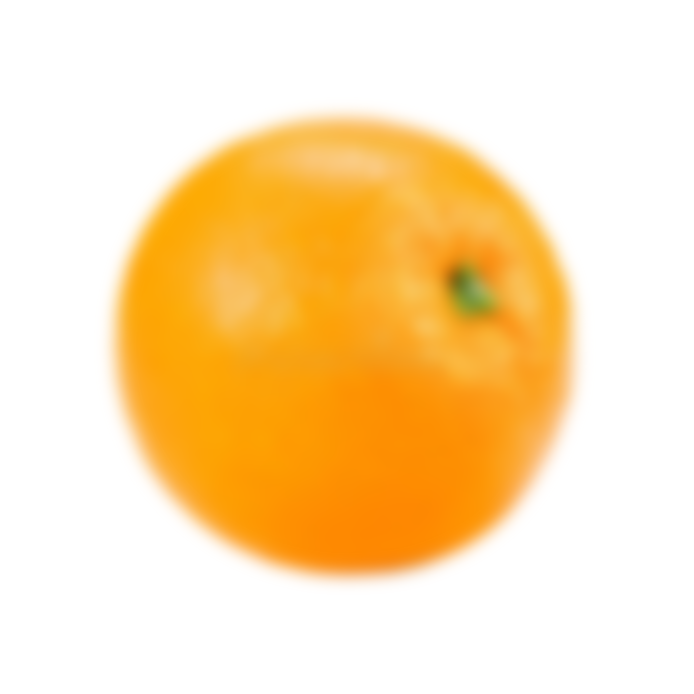
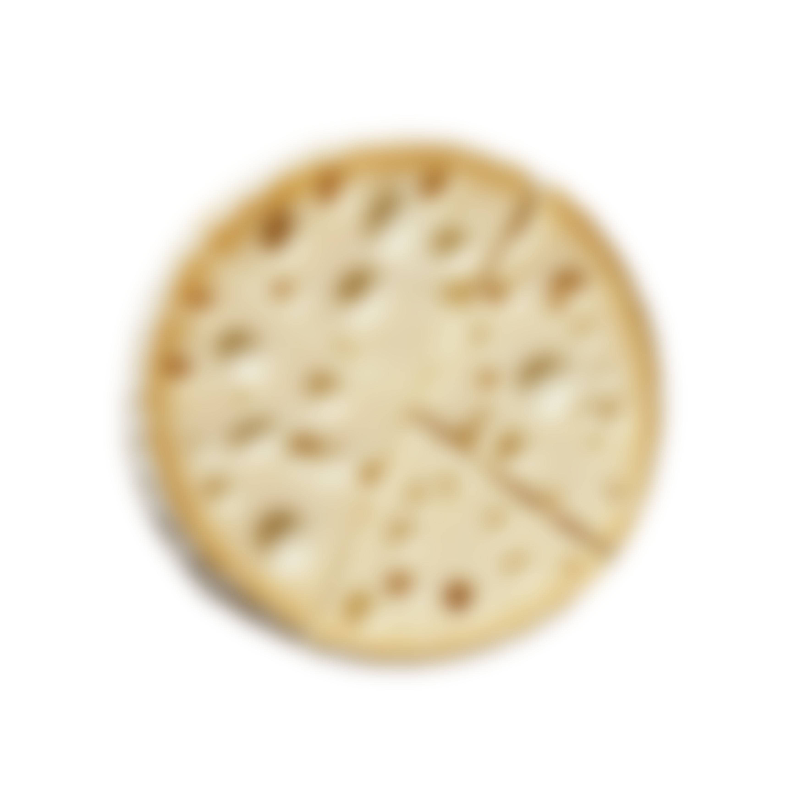
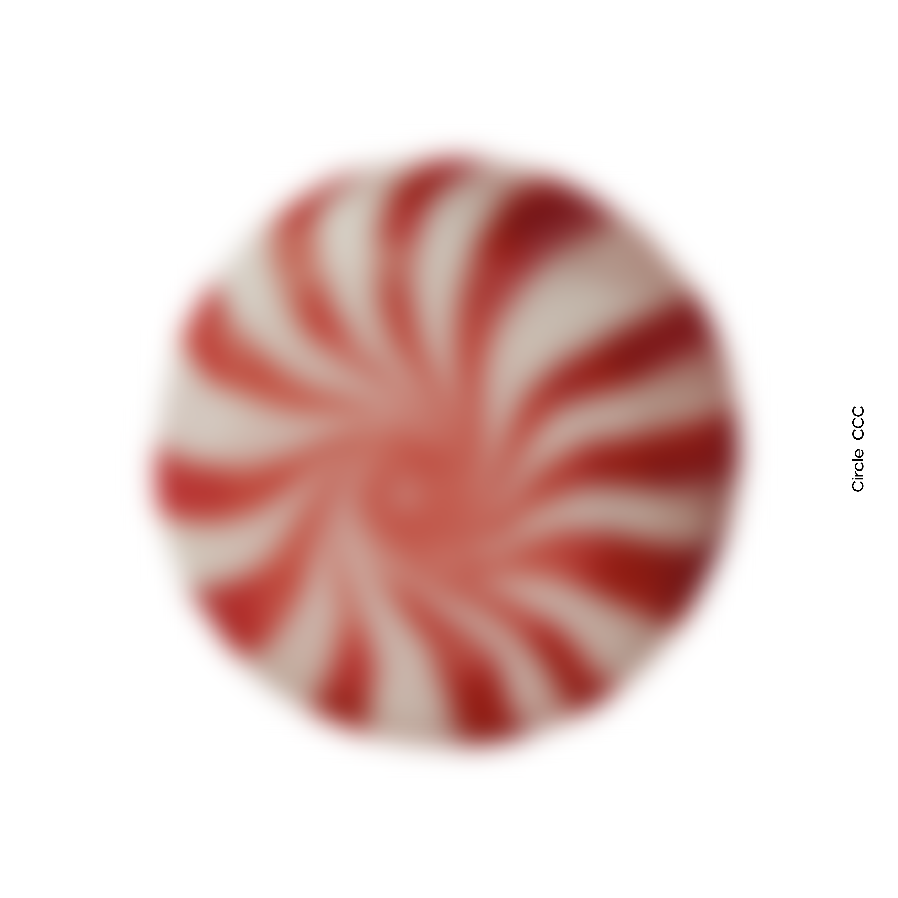
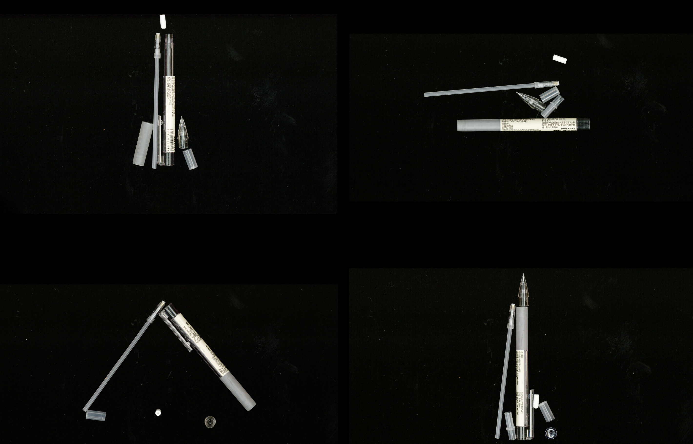
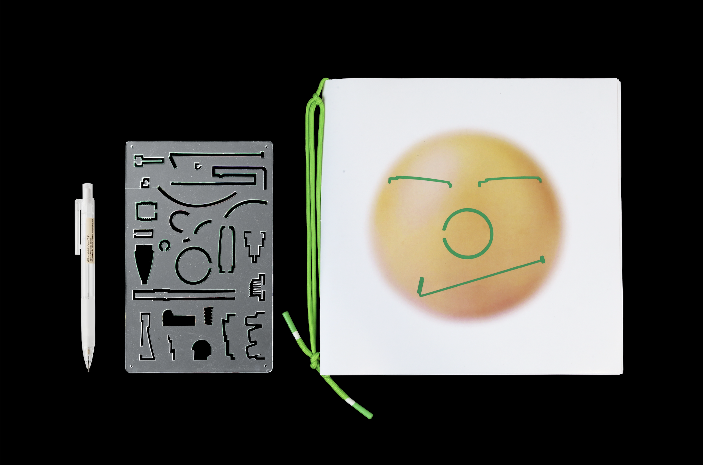
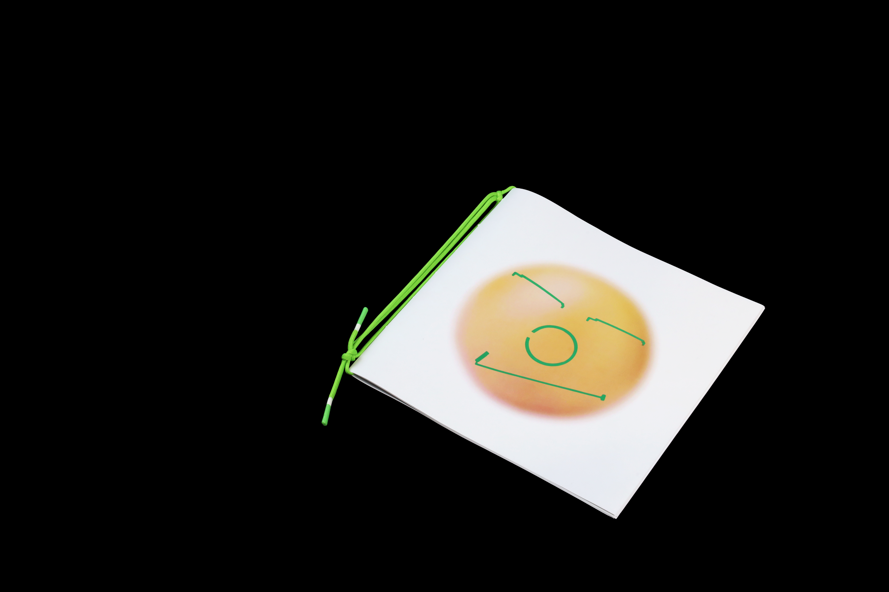
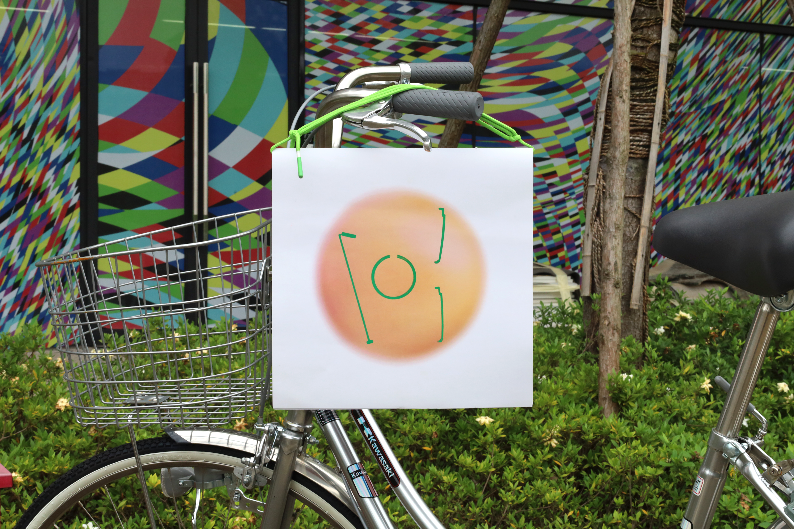

Circle
Taking a pencil as the prototype item, through “disassembling the pencil”, its structural elements are transformed into graphics with combination potential, and eventually a “face creation ruler” with drawing function is formed. In this book, I have provided 16 circular images based on the size of a human face. You can draw any facial features on the circle with a ruler to exercise your imagination. I encourage a re-examination of the potential of “textbook doodling” as a creative behavior in educational contexts, rather than simply suppressing it.
以铅笔为原型物品，通过“拆解铅笔”，将其结构性元素转化为具有组合潜力的图形，最终形成一把具备绘图功能的“人脸创作尺”。在这本书中我提供了16个以人脸尺寸为基准的圆形图像，可以用尺子在圆形上任意绘制五官发挥想象力，鼓励在教育情境中重新审视“课本涂鸦”作为一种创造性行为的潜能，而非简单地加以抑制。
- Category
- Experimental
- Designer
- Chen Jiaqi
陈家琪 - Art Direction
- José Quintanar
- Year
- 2025





Pencil - A
Pencil - B
Pencil - C
Pencil - D



More Works
Otowotto
Θ=1/0
Gene Gallery
Lemaire
Soma APP
Circle
Monosci Font
24-960
A World On Paper
Golden Bell Laureates
Poetics Of Form
8th Annual Conference
Perceptual Bias
Behind The Mask
Natural Walk
Cruise Ship 72 Changes
Wandering Here Dre-
aming There
Grand Tour
META（PHYSICAL）FORM
K2 Track Art Museum
Double Art Festival
Songs Of Laber
Making Inbetween